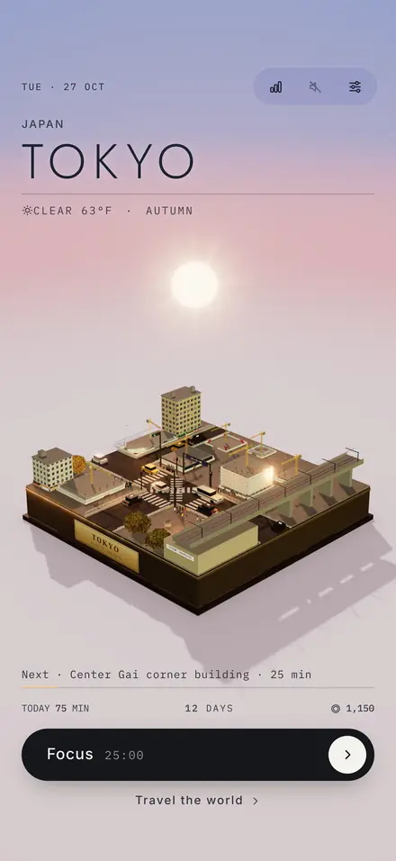
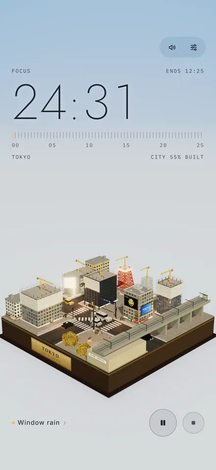
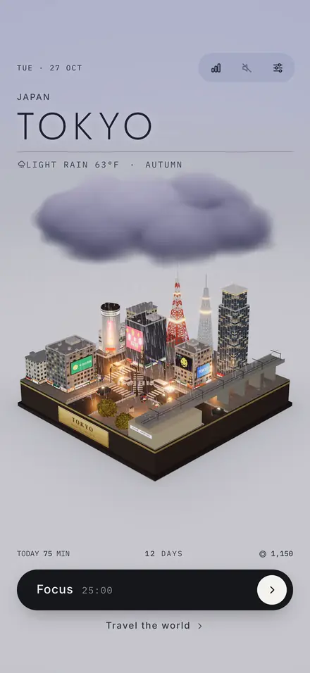
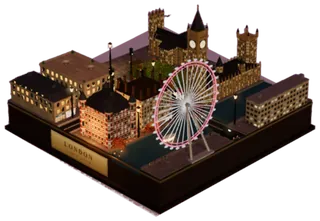
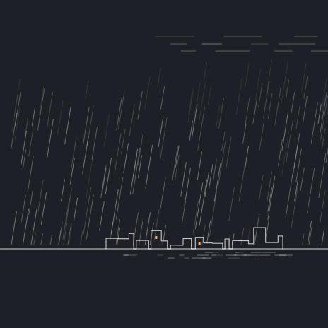
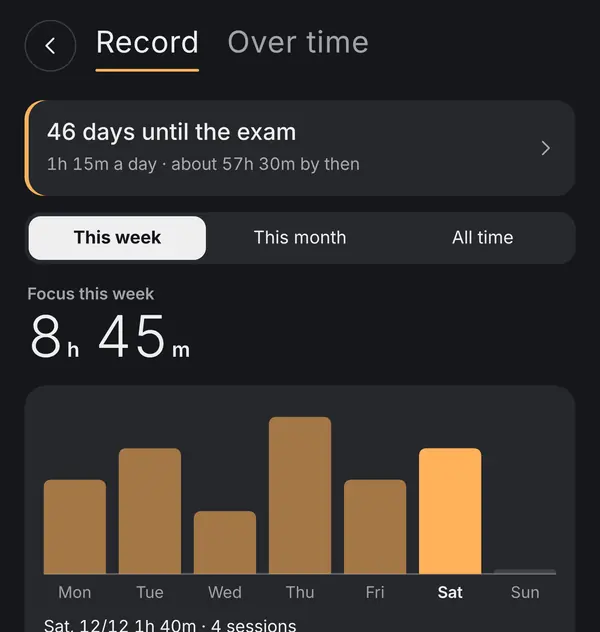
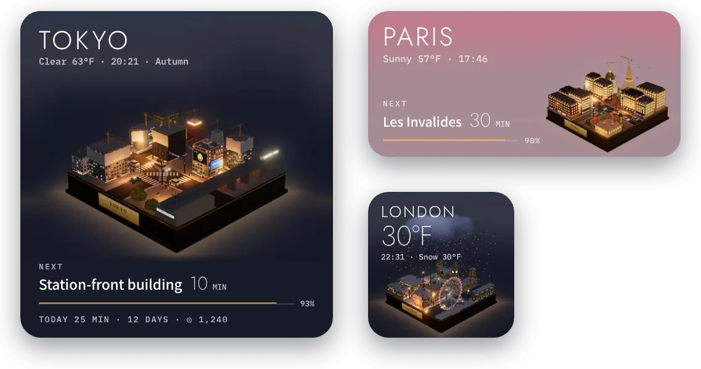

Focus timer for iPhone
Time you focus becomes a city.
Nowtown is a focus timer for study and work. Start the timer and construction begins. A tiny diorama city goes up with every minute you focus.
A focus timer for study and work. A tiny diorama city goes up with every minute you focus.
Release 2026
December 1
Pre-order now on the App StoreAvailable now on the App Store
Free to download · No ads · iPhone (iOS 18 or later)
Coming December 1, 2026 · Pre-order nowAvailable since December 1, 2026
Nº 01 — TOKYOComplete in 7 hours of focus
↓Set it. Focus. Watch it rise.

Step 1 · 06:30
Set a time and start
Choose 5 to 120 minutes and start the timer. It works for 25-minute Pomodoros as it is.

Step 2 · 12:00
The city goes up while you focus
Buildings and landmarks rise with the time you focus. The timer keeps going with the screen off or in another app. Stop early, and what you built stays.
Step 3 · 14:30 · Light rain
If it rains in Tokyo, it rains in your diorama.
Each diorama shows its city's current weather and local time. When it snows in London, it snows in your London.

Step 4 · 16:40
Seven hours of focus completes a city
With one 25-minute session a day, Tokyo is complete in about 17 days. Open the next city with the coins you earn by focusing.
 25 min
25 min 2 h
2 h 4 h
4 h 7 h · Complete
7 h · Complete
Tokyo 16:40 → 17:20
By dusk, the city you built lights up.
Everything a daily focus habit needs.
01 — Cities
From Tokyo to seven cities
Tokyo, New York, London, Paris, Dubai, Singapore and Sydney. Open them with the coins you earn.
 Tokyo
Tokyo New York
New York
London Paris
Paris Dubai
Dubai Singapore
Singapore Sydney
Sydney

Seasonal events
A Christmas tree in Tokyo in December. Each city has its seasonal scenes.
02 — Sound
City sounds and focus sounds
They keep playing during a session, even after you close the app.

Soft rain Window rain
Window rain Fireplace
Fireplace
Pomodoro-friendly
Use 25 minutes, or any length from 5 to 120.
03 — Record
Exam countdown and study records
Count down to your goal date and see your focus time by week.

Your city on the Home Screen
The small widget is free. Medium and large are part of Nowtown Resident.

No ads.
Nothing that gets in the way of your focus.
Free to download.
Free
Free
- Focus timer (5 to 120 minutes)
- City building and seven cities (open them with coins)
- Local weather and time
- City sounds and focus sounds (background playback)
- Basic records and exam countdown
- Small widget and Lock Screen timer
- No ads
Nowtown Resident
Nowtown ResidentOptional paid plan
- Monthly
- ¥300/month
- Yearly
- ¥2,400/year
- One-time
- ¥4,800one-time
7-day free trial on the monthly and yearly plans for new subscribers. Prices shown for Japan; they vary by region.
- Noise sounds (layering)
- Medium and large widgets
- City app icons
- Detailed records
- Desk clock mode
- Photos and time-lapses of your city
- No adsNo ads on any screen.
- What you build staysStopping early never removes buildings.
- Runs with the screen offThe timer counts down to its end time.
- Moves with youYour records and cities are saved to your iCloud.
Support
How does the city grow?
Buildings and landmarks are built with the time you focus in that city. Every site starts at once, and finished buildings are revealed when you end a focus session. If you stop early, what has been built stays.
Are the weather and time real?
Yes. The diorama shows the current weather and local time of each city (weather by Apple WeatherKit).
How do I visit other cities?
Open them with the coins you earn by focusing, or buy them one at a time.
I got a new device. What happens to my history and purchases?
Your focus history, coins, unlocked cities and building progress are also saved to your iCloud (Apple ID). If you are signed in to iCloud with the same Apple ID on your new device, they come back when you install the App. To restore purchases, tap "Restore Purchases" at the bottom of Settings in the App.
How do I cancel my subscription?
Go to Settings → your name → Subscriptions → Nowtown. Cancel at least 24 hours before the end of the current period to avoid the next charge.
The widget or the Lock Screen timer does not appear
The App requires iOS 18 or later. The Lock Screen timer (including Apple Watch) and the small widget are free for everyone. The medium and large widgets are part of Nowtown Resident (without it, they show the view and the city name only). To add a widget, touch and hold the Home Screen, tap Edit → Add Widget → Nowtown.
Does the sound continue when I close the App?
During a focus session, yes. If the sound button at the top right is on, the city sound and focus sounds keep playing until the session ends, even after you close the App. When you are not focusing (Home, a break, or while paused), the sound stops when you close the App.
What is Nowtown Resident?
Our paid plan (monthly, yearly or one-time). It includes the medium and large widgets, city app icons, detailed records, desk clock mode, photos and video of your city, and more focus sounds (noise and layering). Focusing, basic history, the small widget, the Lock Screen timer and background sound are free for everyone. Family Sharing is supported.
Does my session continue with the screen off?
Yes. The timer counts down to the end time, so it keeps going when the screen is off or you switch apps.
Contact
For bugs or feedback, please email us with your device model, iOS version and the screen where it happened.
Start with 25 minutes. Build a city.
Coming December 1, 2026 · Free to download · iPhone (iOS 18 or later)